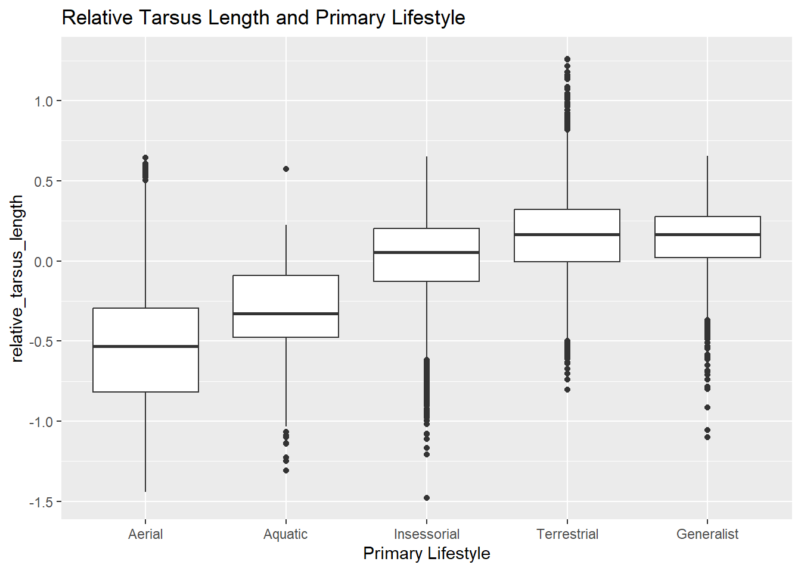
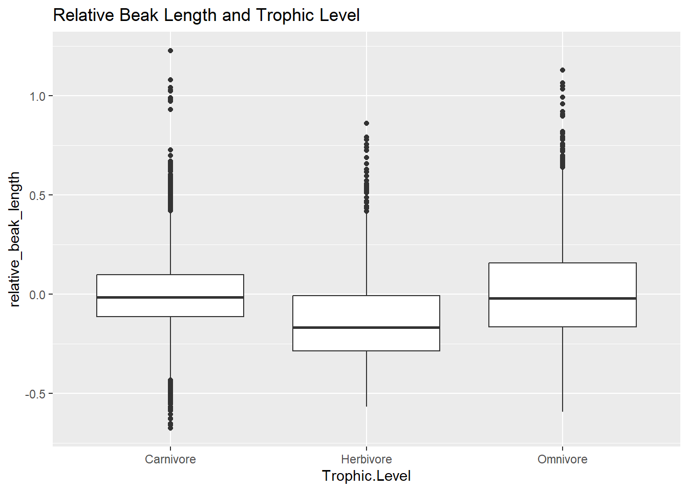
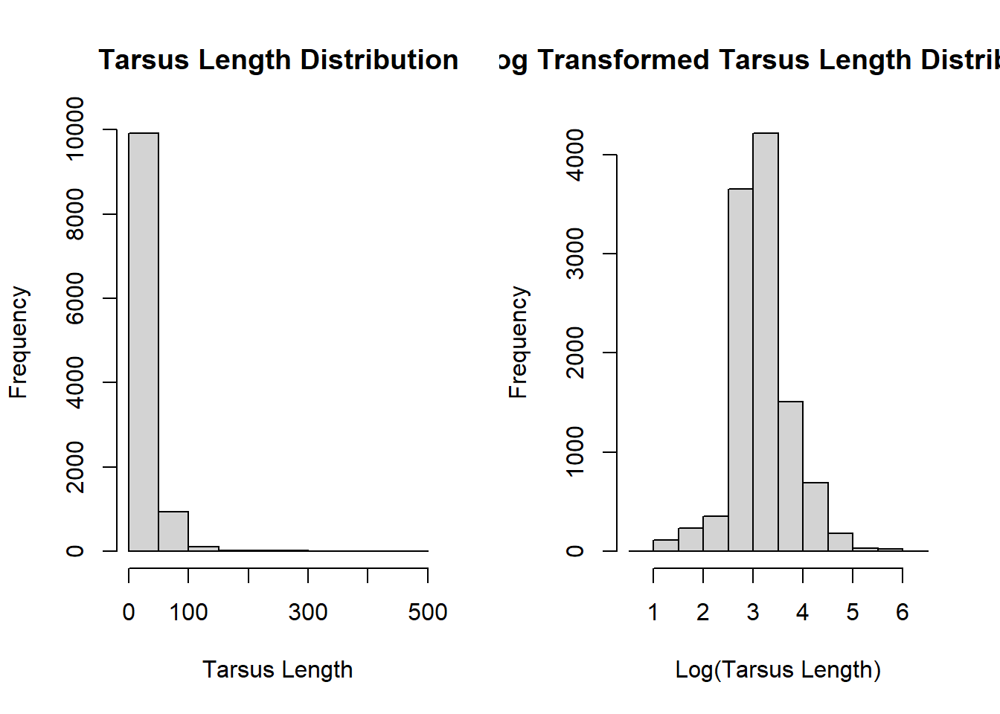
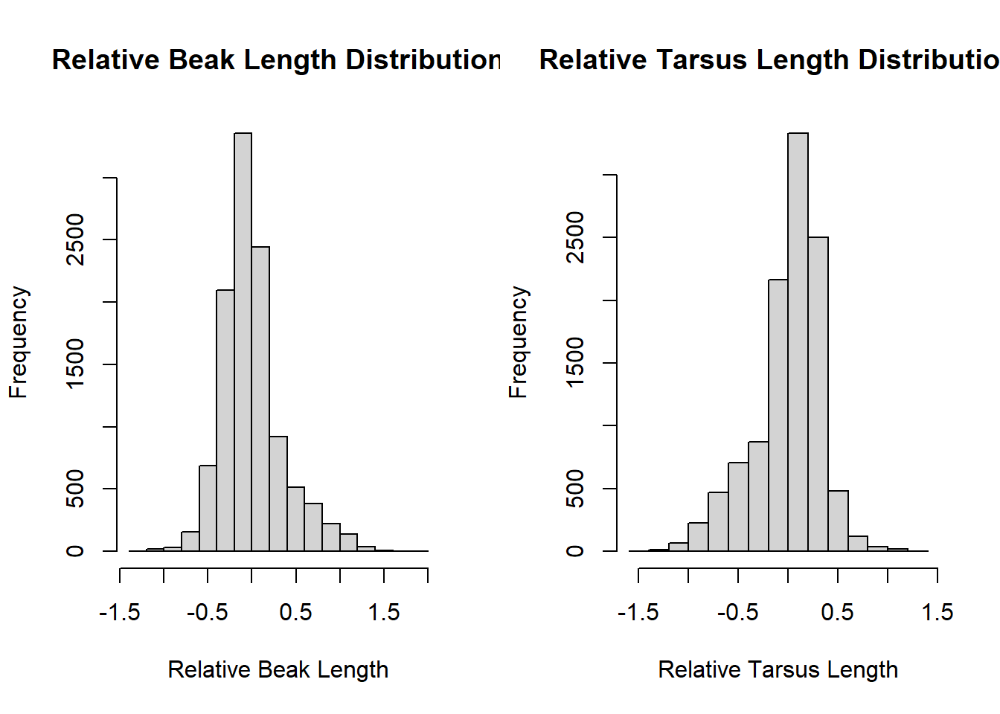
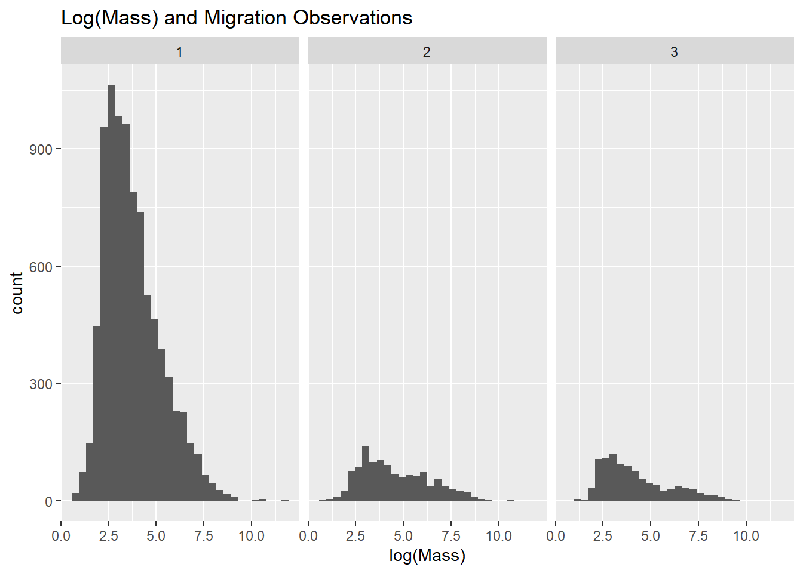
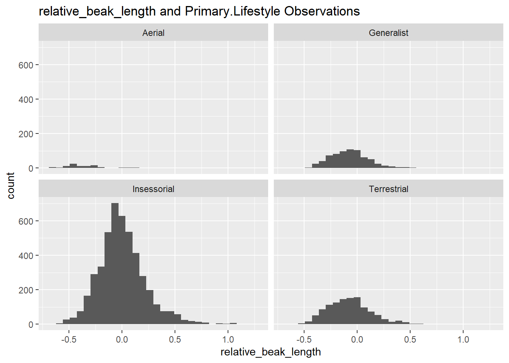

library(tidyverse)
library(skimr)
library(infer)Exercise-10-Quatro
Exercise 10 - Practice ANOVA
Preliminaries
I first loaded in the packages that I am going to be using for this exercise.
I used the read_csv() function from the {tiddyverse} package to load in the data set.
f <- "https://raw.githubusercontent.com/difiore/ada-datasets/refs/heads/main/AVONETdataset1.csv"
d <- read_csv(f, col_names = TRUE)Rows: 11009 Columns: 37
── Column specification ────────────────────────────────────────────────────────
Delimiter: ","
chr (13): Species1, Family1, Order1, Avibase.ID1, Mass.Source, Mass.Refs.Oth...
dbl (24): Sequence, Total.individuals, Female, Male, Unknown, Complete.measu...
ℹ Use `spec()` to retrieve the full column specification for this data.
ℹ Specify the column types or set `show_col_types = FALSE` to quiet this message.I next winnowed the data set to only include the following variables: Species1, Family1, Order1, Beak.Length_Culmen, Beak.Width, Beak.Depth, Tarsus.Length, Wing.Length, Tail.Length, Mass, Habitat, Migration, Trophic.Level, Trophic.Niche, Min.Latitude, Max.Latitude, Centroid.Latitude, Primary.Lifestyle, and Range.Size
d2 <- d |>
select(Species1, Family1, Order1,
Beak.Length_Culmen, Beak.Width, Beak.Depth,
Tarsus.Length, Wing.Length, Tail.Length,
Mass, Habitat, Migration,
Trophic.Level, Trophic.Niche, Min.Latitude,
Max.Latitude, Centroid.Latitude, Primary.Lifestyle,
Range.Size)
names(d2) [1] "Species1" "Family1" "Order1"
[4] "Beak.Length_Culmen" "Beak.Width" "Beak.Depth"
[7] "Tarsus.Length" "Wing.Length" "Tail.Length"
[10] "Mass" "Habitat" "Migration"
[13] "Trophic.Level" "Trophic.Niche" "Min.Latitude"
[16] "Max.Latitude" "Centroid.Latitude" "Primary.Lifestyle"
[19] "Range.Size" I then used the glimpse() function and also the skim() function from the {skimr} package to do a bit of exploratory data analysis. The following data is categorical Species1, Family1, Order1, Habitat, Migration, Trophic.Level, Trophic.Niche, Primary.Lifestyle. The following data is numerical Beak.Length_Culmen, Beak.Width, Beak.Depth, Tarsus.Length, Wing.Length, Tail.Length, Mass, Range.Size, Min.Latitude, Max.Latitude, Centroid.Latitude, and Range.Size. Although Migration contains numerical data I placed it with the categorical data since they could only get a 1, 2, and 3.
#summary stats
glimpse(d2)Rows: 11,009
Columns: 19
$ Species1 <chr> "Accipiter albogularis", "Accipiter badius", "Accip…
$ Family1 <chr> "Accipitridae", "Accipitridae", "Accipitridae", "Ac…
$ Order1 <chr> "Accipitriformes", "Accipitriformes", "Accipitrifor…
$ Beak.Length_Culmen <dbl> 27.7, 20.6, 25.0, 22.5, 21.1, 20.0, 20.5, 19.2, 20.…
$ Beak.Width <dbl> 10.6, 8.8, 8.6, 8.9, 8.7, 6.6, 8.3, 7.7, 8.6, 8.6, …
$ Beak.Depth <dbl> 14.7, 11.6, 12.7, 11.9, 11.1, 12.0, 10.9, 9.6, 11.0…
$ Tarsus.Length <dbl> 62.0, 43.0, 58.1, 61.2, 46.4, 48.7, 52.6, 60.3, 43.…
$ Wing.Length <dbl> 235.2, 186.7, 229.6, 202.2, 217.6, 166.0, 163.5, 21…
$ Tail.Length <dbl> 169.0, 140.6, 186.3, 140.8, 153.5, 127.0, 135.4, 15…
$ Mass <dbl> 248.8, 131.2, 287.5, 142.0, 186.5, 122.0, 157.5, 16…
$ Habitat <chr> "Forest", "Shrubland", "Woodland", "Forest", "Fores…
$ Migration <dbl> 2, 3, 2, 2, 3, 1, 2, 2, 2, 3, 1, 1, 1, 1, 2, 1, 3, …
$ Trophic.Level <chr> "Carnivore", "Carnivore", "Carnivore", "Carnivore",…
$ Trophic.Niche <chr> "Vertivore", "Vertivore", "Vertivore", "Vertivore",…
$ Min.Latitude <dbl> -11.73, -29.47, -55.72, -6.31, 31.19, 7.87, -10.36,…
$ Max.Latitude <dbl> -4.02, 46.39, 23.73, -4.08, 55.86, 9.26, 10.12, 0.0…
$ Centroid.Latitude <dbl> -8.15, 8.23, -10.10, -5.45, 45.24, 8.42, 0.71, -23.…
$ Primary.Lifestyle <chr> "Insessorial", "Insessorial", "Generalist", "Insess…
$ Range.Size <dbl> 37461.21, 22374973.00, 14309701.27, 35580.71, 29367…skim(d2)| Name | d2 |
| Number of rows | 11009 |
| Number of columns | 19 |
| _______________________ | |
| Column type frequency: | |
| character | 7 |
| numeric | 12 |
| ________________________ | |
| Group variables | None |
Variable type: character
| skim_variable | n_missing | complete_rate | min | max | empty | n_unique | whitespace |
|---|---|---|---|---|---|---|---|
| Species1 | 0 | 1.00 | 9 | 36 | 0 | 11009 | 0 |
| Family1 | 0 | 1.00 | 7 | 18 | 0 | 243 | 0 |
| Order1 | 0 | 1.00 | 10 | 19 | 0 | 36 | 0 |
| Habitat | 98 | 0.99 | 4 | 14 | 0 | 11 | 0 |
| Trophic.Level | 5 | 1.00 | 8 | 9 | 0 | 4 | 0 |
| Trophic.Niche | 10 | 1.00 | 8 | 21 | 0 | 10 | 0 |
| Primary.Lifestyle | 0 | 1.00 | 6 | 11 | 0 | 5 | 0 |
Variable type: numeric
| skim_variable | n_missing | complete_rate | mean | sd | p0 | p25 | p50 | p75 | p100 | hist |
|---|---|---|---|---|---|---|---|---|---|---|
| Beak.Length_Culmen | 0 | 1.00 | 26.36 | 24.39 | 4.50 | 14.70 | 19.90 | 28.50 | 414.20 | ▇▁▁▁▁ |
| Beak.Width | 0 | 1.00 | 6.58 | 5.15 | 0.70 | 3.60 | 5.00 | 7.70 | 88.90 | ▇▁▁▁▁ |
| Beak.Depth | 0 | 1.00 | 8.06 | 7.59 | 1.00 | 3.80 | 5.80 | 9.40 | 110.90 | ▇▁▁▁▁ |
| Tarsus.Length | 0 | 1.00 | 28.73 | 24.84 | 2.50 | 17.40 | 22.00 | 31.30 | 481.20 | ▇▁▁▁▁ |
| Wing.Length | 0 | 1.00 | 124.78 | 93.44 | 0.10 | 66.80 | 91.50 | 145.50 | 789.90 | ▇▂▁▁▁ |
| Tail.Length | 0 | 1.00 | 86.65 | 61.08 | 0.10 | 50.20 | 68.70 | 99.90 | 812.80 | ▇▁▁▁▁ |
| Mass | 0 | 1.00 | 267.15 | 1883.03 | 1.90 | 15.00 | 35.50 | 121.00 | 111000.00 | ▇▁▁▁▁ |
| Migration | 23 | 1.00 | 1.29 | 0.62 | 1.00 | 1.00 | 1.00 | 1.00 | 3.00 | ▇▁▁▁▁ |
| Min.Latitude | 57 | 0.99 | -6.44 | 22.37 | -85.58 | -21.22 | -7.15 | 8.07 | 68.08 | ▁▃▇▃▁ |
| Max.Latitude | 57 | 0.99 | 11.51 | 23.32 | -65.12 | -3.33 | 9.00 | 22.07 | 85.01 | ▁▃▇▂▁ |
| Centroid.Latitude | 57 | 0.99 | 2.95 | 22.07 | -71.04 | -9.73 | -0.22 | 15.28 | 78.43 | ▁▃▇▂▁ |
| Range.Size | 57 | 0.99 | 2578859.38 | 7629310.06 | 0.88 | 54052.87 | 416076.61 | 2187040.21 | 136304432.20 | ▇▁▁▁▁ |
Challenge 1 - One-Factor ANOVA and Inference
Step 1:
I made boxplots for the following:
log(Mass) in relation to Trophic.Level
log(Mass) in relation to Migration
Mass and Trophic.Level
# x = trophic level
# y = mass
Mass_trophic_boxplot <- d2 |>
drop_na(Trophic.Level, Mass) |> # droping NAs
ggplot(aes(x = Trophic.Level, y = log(Mass))) +
geom_boxplot() +
labs(title = "Mass and Trophic Level")
Mass_trophic_boxplot
Mass and Migration
# x = migration
# y = mass
Mass_Migration_boxplot <- d2 |>
drop_na(Migration, Mass) |> # droping NAs
ggplot(aes(x = as.factor(Migration), y = log(Mass))) + # covert numerical to factor
geom_boxplot() +
labs(title = "Mass and Migration")
Mass_Migration_boxplotStep 2:
I ran two linear models for:
the relationship between log(Mass) and Trophic.Level
the relationship between log(Mass) and Migration
The global F statistic is large enough and significant in both relationships:
Log(Mass) and Trophic.Level (F = 78.42, p < 2.2e-16)
Log(Mass) and Migration (F = 144.5, p < 2.2e-16)
This means that you can reject the null hypothesis for both.
The original reference level is the number 1 migration type. Both number 2 and 3 migration types are different from the reference level (number 1). I re-leveled the Migration data set so the number 2 migration type was the reference level. This would allow me to get the last comparison (number 2 vs number 3) which is also different.
Mass and Trophic.Level
#lm() omits NA by default
Mass_trophic_lm <- lm(data = d2, log(Mass) ~ Trophic.Level)
Mass_trophic_lm
Call:
lm(formula = log(Mass) ~ Trophic.Level, data = d2)
Coefficients:
(Intercept) Trophic.LevelHerbivore Trophic.LevelOmnivore
3.80834 0.25639 0.01422
Trophic.LevelScavenger
4.63189 summary(Mass_trophic_lm)
Call:
lm(formula = log(Mass) ~ Trophic.Level, data = d2)
Residuals:
Min 1Q Median 3Q Max
-3.4229 -1.1551 -0.3028 0.8982 7.5526
Coefficients:
Estimate Std. Error t value Pr(>|t|)
(Intercept) 3.80834 0.01967 193.632 < 2e-16 ***
Trophic.LevelHerbivore 0.25639 0.03406 7.528 5.54e-14 ***
Trophic.LevelOmnivore 0.01422 0.04116 0.345 0.73
Trophic.LevelScavenger 4.63189 0.34447 13.446 < 2e-16 ***
---
Signif. codes: 0 '***' 0.001 '**' 0.01 '*' 0.05 '.' 0.1 ' ' 1
Residual standard error: 1.538 on 11000 degrees of freedom
(5 observations deleted due to missingness)
Multiple R-squared: 0.02094, Adjusted R-squared: 0.02067
F-statistic: 78.42 on 3 and 11000 DF, p-value: < 2.2e-16Mass and Migration
Mass_Migration_lm <- lm(data = d2, log(Mass) ~ as.factor(Migration))
Mass_Migration_lm
Call:
lm(formula = log(Mass) ~ as.factor(Migration), data = d2)
Coefficients:
(Intercept) as.factor(Migration)2 as.factor(Migration)3
3.7746 0.7597 0.3765 summary(Mass_Migration_lm)
Call:
lm(formula = log(Mass) ~ as.factor(Migration), data = d2)
Residuals:
Min 1Q Median 3Q Max
-3.8924 -1.1769 -0.3088 0.9152 7.8427
Coefficients:
Estimate Std. Error t value Pr(>|t|)
(Intercept) 3.77457 0.01636 230.710 < 2e-16 ***
as.factor(Migration)2 0.75971 0.04731 16.059 < 2e-16 ***
as.factor(Migration)3 0.37647 0.05155 7.303 3.02e-13 ***
---
Signif. codes: 0 '***' 0.001 '**' 0.01 '*' 0.05 '.' 0.1 ' ' 1
Residual standard error: 1.535 on 10983 degrees of freedom
(23 observations deleted due to missingness)
Multiple R-squared: 0.02563, Adjusted R-squared: 0.02546
F-statistic: 144.5 on 2 and 10983 DF, p-value: < 2.2e-16Re-leveling Data for Mass and Migration
#releveling the Migration
d2 <- d2 |>
mutate(migration_relevel = relevel(as.factor(d2$Migration), ref = "2"))
Mass_Migration_lm_relevel <- lm(data = d2, log(Mass) ~ as.factor(migration_relevel))
Mass_Migration_lm_relevel
Call:
lm(formula = log(Mass) ~ as.factor(migration_relevel), data = d2)
Coefficients:
(Intercept) as.factor(migration_relevel)1
4.5343 -0.7597
as.factor(migration_relevel)3
-0.3832 summary(Mass_Migration_lm_relevel)
Call:
lm(formula = log(Mass) ~ as.factor(migration_relevel), data = d2)
Residuals:
Min 1Q Median 3Q Max
-3.8924 -1.1769 -0.3088 0.9152 7.8427
Coefficients:
Estimate Std. Error t value Pr(>|t|)
(Intercept) 4.53428 0.04439 102.149 < 2e-16 ***
as.factor(migration_relevel)1 -0.75971 0.04731 -16.059 < 2e-16 ***
as.factor(migration_relevel)3 -0.38324 0.06603 -5.804 6.67e-09 ***
---
Signif. codes: 0 '***' 0.001 '**' 0.01 '*' 0.05 '.' 0.1 ' ' 1
Residual standard error: 1.535 on 10983 degrees of freedom
(23 observations deleted due to missingness)
Multiple R-squared: 0.02563, Adjusted R-squared: 0.02546
F-statistic: 144.5 on 2 and 10983 DF, p-value: < 2.2e-16Step 3:
I first conducted an ANOVA for Log(Mass) and Migration. I then used this ANOVA to conduct my posthoc Tukey Honest Significant Differences test and found that all migration types significantly differ from each other. I could have just use the original linear model from earlier.
#need to run ANOVA first before posthoc (duh)
Mass_Migration_ANOVA <- aov(data = d2, log(Mass) ~ as.factor(Migration))
Mass_Migration_ANOVACall:
aov(formula = log(Mass) ~ as.factor(Migration), data = d2)
Terms:
as.factor(Migration) Residuals
Sum of Squares 680.931 25882.283
Deg. of Freedom 2 10983
Residual standard error: 1.535115
Estimated effects may be unbalanced
23 observations deleted due to missingness#tukey posthoc
Mass_Migration_tukey_posthoc <- TukeyHSD(Mass_Migration_ANOVA, which = "as.factor(Migration)")
Mass_Migration_tukey_posthoc Tukey multiple comparisons of means
95% family-wise confidence level
Fit: aov(formula = log(Mass) ~ as.factor(Migration), data = d2)
$`as.factor(Migration)`
diff lwr upr p adj
2-1 0.7597067 0.6488157 0.8705977 0
3-1 0.3764693 0.2556282 0.4973105 0
3-2 -0.3832374 -0.5380211 -0.2284536 0Step 4:
I first calculated the original F statistic for log(Mass) and Trophic.Level. I then conducted a permutation to generate a null distribution of F statistic for log(Mass) and Trophic.Level by using the {infer} package. I then calculated the p-value.
#calculated the original F and p-value
Mass_trophic_original_F <- aov(data = d2, log(Mass) ~ Trophic.Level) |>
broom::tidy() |>
filter(term == "Trophic.Level")
Mass_trophic_original_F# A tibble: 1 × 6
term df sumsq meansq statistic p.value
<chr> <dbl> <dbl> <dbl> <dbl> <dbl>
1 Trophic.Level 3 557. 186. 78.4 3.43e-50#need to create new column with logMass
# permutation can't handle or use log(Mass)
d3 <- d2 |>
mutate(logMass = log(Mass))
#perumtation
Mass_trophic_permuted_F <- d3 |>
specify(logMass ~ Trophic.Level) |>
hypothesise(null = "independence") |>
generate(reps = 1000, type = "permute") |>
calculate(stat = "F")
#p-value for permuted f statistics
Mass_trophic_permuted_p <- Mass_trophic_permuted_F |>
get_p_value(obs_stat = Mass_trophic_original_F$statistic, direction = "greater")
Mass_trophic_permuted_p# A tibble: 1 × 1
p_value
<dbl>
1 0Challenge 2 - Data Wrangling plus One- and Two-Factor ANOVA
Step 1:
I created two new variables (relative_beak_length and relative_tarsus_length) and added them to my data set.
relative_beak_length contains the residuals of log(Beak.Length_Culmen) on log(Mass)
relative_tarsus_length contains the residuals of log(Tarsus.Length) on log(Mass)
#created a liner model for both relationships ; to get he residuals
#beak
Mass_beaklength_lm <- lm(data = d2, log(Beak.Length_Culmen) ~ log(Mass))
#tarsus
Mass_tarsuslength_lm <- lm(data = d2, log(Tarsus.Length) ~ log(Mass))
#new data set with new variables/columns
d4 <- d2 |> mutate(relative_beak_length = Mass_beaklength_lm$residuals,
relative_tarsus_length = Mass_tarsuslength_lm$residuals)
glimpse(d4)Rows: 11,009
Columns: 22
$ Species1 <chr> "Accipiter albogularis", "Accipiter badius", "A…
$ Family1 <chr> "Accipitridae", "Accipitridae", "Accipitridae",…
$ Order1 <chr> "Accipitriformes", "Accipitriformes", "Accipitr…
$ Beak.Length_Culmen <dbl> 27.7, 20.6, 25.0, 22.5, 21.1, 20.0, 20.5, 19.2,…
$ Beak.Width <dbl> 10.6, 8.8, 8.6, 8.9, 8.7, 6.6, 8.3, 7.7, 8.6, 8…
$ Beak.Depth <dbl> 14.7, 11.6, 12.7, 11.9, 11.1, 12.0, 10.9, 9.6, …
$ Tarsus.Length <dbl> 62.0, 43.0, 58.1, 61.2, 46.4, 48.7, 52.6, 60.3,…
$ Wing.Length <dbl> 235.2, 186.7, 229.6, 202.2, 217.6, 166.0, 163.5…
$ Tail.Length <dbl> 169.0, 140.6, 186.3, 140.8, 153.5, 127.0, 135.4…
$ Mass <dbl> 248.8, 131.2, 287.5, 142.0, 186.5, 122.0, 157.5…
$ Habitat <chr> "Forest", "Shrubland", "Woodland", "Forest", "F…
$ Migration <dbl> 2, 3, 2, 2, 3, 1, 2, 2, 2, 3, 1, 1, 1, 1, 2, 1,…
$ Trophic.Level <chr> "Carnivore", "Carnivore", "Carnivore", "Carnivo…
$ Trophic.Niche <chr> "Vertivore", "Vertivore", "Vertivore", "Vertivo…
$ Min.Latitude <dbl> -11.73, -29.47, -55.72, -6.31, 31.19, 7.87, -10…
$ Max.Latitude <dbl> -4.02, 46.39, 23.73, -4.08, 55.86, 9.26, 10.12,…
$ Centroid.Latitude <dbl> -8.15, 8.23, -10.10, -5.45, 45.24, 8.42, 0.71, …
$ Primary.Lifestyle <chr> "Insessorial", "Insessorial", "Generalist", "In…
$ Range.Size <dbl> 37461.21, 22374973.00, 14309701.27, 35580.71, 2…
$ migration_relevel <fct> 2, 3, 2, 2, 3, 1, 2, 2, 2, 3, 1, 1, 1, 1, 2, 1,…
$ relative_beak_length <dbl> -0.2070788, -0.3256851, -0.3497445, -0.2594067,…
$ relative_tarsus_length <dbl> 0.4639465, 0.2936955, 0.3547687, 0.6224533, 0.2…Step 2:
I made boxplots for the following:
relative_tarsus_length variable in relation to Primary.Lifestyle
relative_beak_length variable in relation to Trophic.Niche
Relative_tarsus_length and Primary.Lifestyle
# x = Primary.Lifestyle
# y = relative tarsus length
tarsus_lifestyle_boxplot <- d4 |>
drop_na(Primary.Lifestyle, relative_tarsus_length) |> # droping NAs
ggplot(aes(x = factor(Primary.Lifestyle, levels = c("Aerial", "Aquatic", "Insessorial", "Terrestrial","Generalist")), y = relative_tarsus_length)) +
geom_boxplot() +
labs(x = "Primary Lifestyle", title = "Relative Tarsus Length and Primary Lifestyle")
tarsus_lifestyle_boxplot
Relative_beak_length and Trophic.Niche
# x = Trophic.Niche
# y = relative beak length
beak_niche_boxplot <- d4 |>
drop_na(Trophic.Niche, relative_beak_length) |> # droping NAs
ggplot(aes(x = factor(Trophic.Niche, levels = c("Nectarivore","Herbivore aquatic","Frugivore", "Granivore", "Herbivore terrestrial", "Aquatic predator", "Invertivore", "Vertivore", "Scavenger", "Omnivore")), y = relative_beak_length)) +
geom_boxplot() +
labs(x = "Trophic Niche", title = "Relative Beak Length and Trophic Niche") +
theme(axis.text.x = element_text(angle = 45, vjust = 1.1, hjust = 1.2))
beak_niche_boxplotStep 3:
I first created a new dataset that removed all the NA observations from the Migration and Range.Size column. I then looked at the distribution of Range.Size. The distribution of Range.Size was not normally distributed, so for the ANOVA I log transformed Range.Size.
#removing NAs
d4_no_NA <- d4 |>
drop_na(Migration, Range.Size)
#distribution of range.size
# not equally distributed so need to take log
par(mfrow = c(1, 2))
hist(d4_no_NA$Range.Size, xlab = "Range Size", main = "Range Size Distribution")
hist(log(d4_no_NA$Range.Size), xlab = "log(Range Size)", main = "Log Range Size Distribution")I next did an ANOVA to look at the association between geographic Range.Size and Migration. Based on the global model, range size is associated with Migration behavior style (F = 520.3, p <2e-16) and about 8.68% of the variance of Range.Size is associated with Migration. I used the lm() function since it is equivalent to a one-way ANOVA that you would get from the aov() function. Both type 2 (p <2e-16) and type 3 (p <2e-16) migrations are different than the reference level (type 1 migration). When I re-leveled the Migration data set so type 2 migration was the reference level, I saw type 2 and type 3 were also different (p = 6.67e-09).
# Used lm() instead ; same as one-way ANOVA in aov()
Range_Migration_lm <- lm(data = d4_no_NA, log(Range.Size) ~ as.factor(Migration))
summary(Range_Migration_lm)
Call:
lm(formula = log(Range.Size) ~ as.factor(Migration), data = d4_no_NA)
Residuals:
Min 1Q Median 3Q Max
-14.5710 -1.4521 0.4357 1.9763 5.9271
Coefficients:
Estimate Std. Error t value Pr(>|t|)
(Intercept) 12.03381 0.02974 404.62 <2e-16 ***
as.factor(Migration)2 1.78469 0.08606 20.74 <2e-16 ***
as.factor(Migration)3 2.51702 0.09380 26.83 <2e-16 ***
---
Signif. codes: 0 '***' 0.001 '**' 0.01 '*' 0.05 '.' 0.1 ' ' 1
Residual standard error: 2.785 on 10934 degrees of freedom
Multiple R-squared: 0.0869, Adjusted R-squared: 0.08674
F-statistic: 520.3 on 2 and 10934 DF, p-value: < 2.2e-16#alternative
Range_Migration_ANOVA <- aov(data = d4_no_NA, log(Range.Size) ~ as.factor(Migration))Re-leveling Data for Range Size and Migration
d4_no_NA <- d4_no_NA |>
mutate(migration_relevel_d4 = relevel(as.factor(d4_no_NA$Migration), ref = "2"))
range_Migration_lm_relevel <- lm(data = d4_no_NA, log(Mass) ~ as.factor(migration_relevel_d4))
range_Migration_lm_relevel
Call:
lm(formula = log(Mass) ~ as.factor(migration_relevel_d4), data = d4_no_NA)
Coefficients:
(Intercept) as.factor(migration_relevel_d4)1
4.5298 -0.7562
as.factor(migration_relevel_d4)3
-0.3770 summary(Mass_Migration_lm_relevel)
Call:
lm(formula = log(Mass) ~ as.factor(migration_relevel), data = d2)
Residuals:
Min 1Q Median 3Q Max
-3.8924 -1.1769 -0.3088 0.9152 7.8427
Coefficients:
Estimate Std. Error t value Pr(>|t|)
(Intercept) 4.53428 0.04439 102.149 < 2e-16 ***
as.factor(migration_relevel)1 -0.75971 0.04731 -16.059 < 2e-16 ***
as.factor(migration_relevel)3 -0.38324 0.06603 -5.804 6.67e-09 ***
---
Signif. codes: 0 '***' 0.001 '**' 0.01 '*' 0.05 '.' 0.1 ' ' 1
Residual standard error: 1.535 on 10983 degrees of freedom
(23 observations deleted due to missingness)
Multiple R-squared: 0.02563, Adjusted R-squared: 0.02546
F-statistic: 144.5 on 2 and 10983 DF, p-value: < 2.2e-16Range Size and Migration post-hoc Tukey HSD test
It seem that all Migration categories differ significantly from one another.
Range_Migration_ANOVA <- aov(data = d4_no_NA, log(Mass) ~ as.factor(Migration))
Range_Migration_ANOVACall:
aov(formula = log(Mass) ~ as.factor(Migration), data = d4_no_NA)
Terms:
as.factor(Migration) Residuals
Sum of Squares 673.113 25741.569
Deg. of Freedom 2 10934
Residual standard error: 1.534362
Estimated effects may be unbalanced#tukey posthoc
Range_Migration_tukey_posthoc <- TukeyHSD(Range_Migration_ANOVA, which = "as.factor(Migration)")
Range_Migration_tukey_posthoc Tukey multiple comparisons of means
95% family-wise confidence level
Fit: aov(formula = log(Mass) ~ as.factor(Migration), data = d4_no_NA)
$`as.factor(Migration)`
diff lwr upr p adj
2-1 0.7561569 0.6450061 0.8673076 0
3-1 0.3791799 0.2580410 0.5003189 0
3-2 -0.3769770 -0.5321496 -0.2218043 0Step 4:
I winnowed my data to only include “Passeriformes” in the Order1 variable. I also removed any NAs from the variables I will be using in my data set.
d4_Pass <- d4 |>
filter(Order1 == "Passeriformes") |>
drop_na(Primary.Lifestyle, Trophic.Level, relative_beak_length) #removing NAsI next ran separate one-factor ANOVAs and created boxplots for the following:
relative_beak_length variable in relation to Primary.Lifestyle
relative_beak_length variable in relation to Trophic.Level
I used the lm() functionsince it is equivalent to a one-way ANOVA you would get from aov() function. It seems as if relative_beak_length is associated with Primary.Lifestyle (F = 256.8, p < 2.2e-16) and Trophic.Level (F = 216.4, p < 2.2e-16).
Relative_beak_length and Primary.Lifestyle
# x = Primary.Lifestyle
# y = relative beak length
#used lm() again
#linear model ; One-way ANOVA
beak_lifestyle_lm <- lm(data = d4_Pass, relative_beak_length ~ Primary.Lifestyle)
summary(beak_lifestyle_lm)
Call:
lm(formula = relative_beak_length ~ Primary.Lifestyle, data = d4_Pass)
Residuals:
Min 1Q Median 3Q Max
-0.6314 -0.1380 -0.0172 0.1118 1.2241
Coefficients:
Estimate Std. Error t value Pr(>|t|)
(Intercept) -0.34950 0.02158 -16.19 <2e-16 ***
Primary.LifestyleGeneralist 0.27926 0.02306 12.11 <2e-16 ***
Primary.LifestyleInsessorial 0.35342 0.02181 16.20 <2e-16 ***
Primary.LifestyleTerrestrial 0.27924 0.02249 12.42 <2e-16 ***
---
Signif. codes: 0 '***' 0.001 '**' 0.01 '*' 0.05 '.' 0.1 ' ' 1
Residual standard error: 0.2158 on 6610 degrees of freedom
Multiple R-squared: 0.05581, Adjusted R-squared: 0.05538
F-statistic: 130.2 on 3 and 6610 DF, p-value: < 2.2e-16#boxplot
beak_lifestyle_boxplot <- d4_Pass |>
ggplot(aes(x = Primary.Lifestyle, y = relative_beak_length)) +
geom_boxplot() +
labs(title = "Relative Beak Length and Primary Lifestyle")
beak_lifestyle_boxplotRelative_beak_length and Trophic.Level
# x = Trophic.Level
# y = relative beak length
#used lm() again
#linear model ; One-way ANOVA
beak_trophic_lm <- lm(data = d4_Pass, relative_beak_length ~ Trophic.Level)
summary(beak_trophic_lm)
Call:
lm(formula = relative_beak_length ~ Trophic.Level, data = d4_Pass)
Residuals:
Min 1Q Median 3Q Max
-0.67045 -0.13692 -0.02063 0.11129 1.23116
Coefficients:
Estimate Std. Error t value Pr(>|t|)
(Intercept) -0.003170 0.003501 -0.906 0.36518
Trophic.LevelHerbivore -0.118713 0.006956 -17.066 < 2e-16 ***
Trophic.LevelOmnivore 0.017902 0.006606 2.710 0.00675 **
---
Signif. codes: 0 '***' 0.001 '**' 0.01 '*' 0.05 '.' 0.1 ' ' 1
Residual standard error: 0.2165 on 6611 degrees of freedom
Multiple R-squared: 0.05001, Adjusted R-squared: 0.04972
F-statistic: 174 on 2 and 6611 DF, p-value: < 2.2e-16#boxplot
beak_trophic_boxplot <- d4_Pass |>
ggplot(aes(x = Trophic.Level, y = relative_beak_length,)) +
geom_boxplot() +
labs(title = "Relative Beak Length and Trophic Level")
beak_trophic_boxplot
Relative_beak_length and Primary.Lifestyle/Trophic.Level Boxplot
#interaction() allows you to combine variables in ggplot
beak_lifestyle_trophic_boxplot <- d4_Pass |>
ggplot(aes(x = interaction(Primary.Lifestyle, Trophic.Level),
y = relative_beak_length)) +
geom_boxplot() +
labs(title = "Relative Beak Length and Primary Lifestyle/Trophic Level") +
theme(axis.text.x = element_text(angle = 90, vjust = 0.4))
beak_lifestyle_trophic_boxplot
Step 5:
I ran a two-factor model using the aov() function to look at the association between Relative_beak_length and Primary.Lifestyle and Trophic.Level among “Passeriformes.” I would conclude that Relative_beak_length is associated with both Primary.Lifestyle (p < 2e-16) and Trophic.Level (p < 2e-16).
#two factor ANOVA
beak_lifestyle_trophic_2factor <- aov(data = d4_Pass,
relative_beak_length ~ Primary.Lifestyle + Trophic.Level)
beak_lifestyle_trophic_2factor Call:
aov(formula = relative_beak_length ~ Primary.Lifestyle + Trophic.Level,
data = d4_Pass)
Terms:
Primary.Lifestyle Trophic.Level Residuals
Sum of Squares 18.19964 17.67686 290.24126
Deg. of Freedom 3 2 6608
Residual standard error: 0.2095775
Estimated effects may be unbalancedsummary(beak_lifestyle_trophic_2factor) Df Sum Sq Mean Sq F value Pr(>F)
Primary.Lifestyle 3 18.20 6.067 138.1 <2e-16 ***
Trophic.Level 2 17.68 8.838 201.2 <2e-16 ***
Residuals 6608 290.24 0.044
---
Signif. codes: 0 '***' 0.001 '**' 0.01 '*' 0.05 '.' 0.1 ' ' 1Step 6 :
I ran a Two-way ANOVA using the aov() function. In this analysis, I included the possibility of an interaction by using the ( : ) operator. It showed that there was interaction between Primary.Lifestyle and Trophic.Level (p = 1.79e-08), meaning that the effect of Primary.Lifestyle on Relative_beak_length is dependent on Trophic.Level and vice versa. I was having trouble understanding what order the variables should be in the ANOVA since it can affect the results.
beak_lifestyle_trophic_2ANOVA <- aov(data = d4_Pass,
relative_beak_length ~ Primary.Lifestyle + Trophic.Level + Primary.Lifestyle:Trophic.Level)
beak_lifestyle_trophic_2ANOVA Call:
aov(formula = relative_beak_length ~ Primary.Lifestyle + Trophic.Level +
Primary.Lifestyle:Trophic.Level, data = d4_Pass)
Terms:
Primary.Lifestyle Trophic.Level Primary.Lifestyle:Trophic.Level
Sum of Squares 18.19964 17.67686 8.40929
Deg. of Freedom 3 2 4
Residuals
Sum of Squares 281.83197
Deg. of Freedom 6604
Residual standard error: 0.2065816
2 out of 12 effects not estimable
Estimated effects may be unbalancedsummary(beak_lifestyle_trophic_2ANOVA) Df Sum Sq Mean Sq F value Pr(>F)
Primary.Lifestyle 3 18.20 6.067 142.15 <2e-16 ***
Trophic.Level 2 17.68 8.838 207.11 <2e-16 ***
Primary.Lifestyle:Trophic.Level 4 8.41 2.102 49.26 <2e-16 ***
Residuals 6604 281.83 0.043
---
Signif. codes: 0 '***' 0.001 '**' 0.01 '*' 0.05 '.' 0.1 ' ' 1
Step 7 :
I used the interaction.plot() function to look at the interaction between Relative_beak_length and Trophic.Level.
interaction.plot(
x.factor = d4_Pass$Primary.Lifestyle, xlab = "Primary Lifestyle",
trace.factor = d4_Pass$Trophic.Level, trace.label = "Trophic Level",
response = d4_Pass$relative_beak_length, ylab = "Relative Beak Length",
fun = base::mean)
Step 8 :
I first went back and checked the distribution for all of the continuous numerical variables. I was able to see these already by using the skim() function from the {infer} package. Since they were not normally distributed I also included the distributions of the log transformed data for Mass, Beak.Length_Culmen, and Tarsus.Length. I also included histograms of the residuals from the new variables we created relative_beak_length and relative_tarsus_length which were normally distributed.
Mass
par(mfrow = c(1, 2))
hist(d2$Mass, xlab = "Mass", main = "Mass Distribution")
hist(log(d2$Mass), xlab = "Log(Mass)", main = "Log Transformed Mass Distribution")Beak.Length_Culmen
par(mfrow = c(1, 2))
hist(d2$Beak.Length_Culmen, xlab = "Beak Length", main = "Beak Length Distribution")
hist(log(d2$Beak.Length_Culmen), xlab = "log(Beak Length)", main = "Log Transformed Beak Length Distribution")Tarsus.Length
par(mfrow = c(1, 2))
hist(d2$Tarsus.Length, xlab = "Tarsus Length", main = "Tarsus Length Distribution")
hist(log(d2$Tarsus.Length), xlab = "Log(Tarsus Length)", main = "Log Transformed Tarsus Length Distribution")
relative_beak_length and relative_tarsus_length
par(mfrow = c(1, 2))
hist(d4$relative_beak_length, xlab = "Relative Beak Length", main = "Relative Beak Length Distribution")
hist(d4$relative_tarsus_length, xlab = "Relative Tarsus Length", main = "Relative Tarsus Length Distribution")
I next applied the general rule of thumb for “equal” variances by comparing the largest and smallest standard deviation (SD) for the different models I created. I also created histograms for both the raw observations and residuals for each of the different models.
log(Mass) in relation to Trophic.Level
mass_Trophic_stats <- d2 |>
group_by(Trophic.Level) |>
summarize(mean_Mass = mean(log(Mass), na.rm = TRUE),
sd_Mass = sd(log(Mass), na.rm = TRUE))
#standard deviation comparison
max(mass_Trophic_stats$sd_Mass) / min(mass_Trophic_stats$sd_Mass)[1] 2.485#observations histogram
ggplot(d4_no_NA, aes(x = log(Mass))) +
geom_histogram() +
facet_wrap(~ Trophic.Level) +
labs(title = "Log(Mass) and Trophic.Level Observations")#need to create new column for residuals
mass_trophic_residuals_table <- d2 |>
drop_na(Mass, Trophic.Level) |>
mutate(mass_trophic_residuals = Mass_trophic_lm$residuals)
#residuals histogram
ggplot(mass_trophic_residuals_table, aes(x = mass_trophic_residuals)) +
geom_histogram() +
facet_wrap(~ Trophic.Level) +
labs(title = "Log(Mass) and Trophic.Level Residuals")log(Mass) in relation to Migration
mass_Migration_stats <- d2 |>
group_by(Migration) |>
summarize(mean_Mass = mean(log(Mass), na.rm = TRUE),
sd_Mass = sd(log(Mass), na.rm = TRUE))
#standard deviation comparison
max(mass_Migration_stats$sd_Mass) / min(mass_Migration_stats$sd_Mass)[1] 1.292077#observations histogram
ggplot(d4_no_NA, aes(x = log(Mass))) +
geom_histogram() +
facet_wrap(~ Migration) +
labs(title = "Log(Mass) and Migration Observations")
#need to create new column for residuals
mass_Migration_residuals_table <- d2 |>
drop_na(Mass, Migration) |>
mutate(mass_Migration_residuals = Mass_Migration_lm$residuals)
#residuals histogram
ggplot(mass_Migration_residuals_table, aes(x = mass_Migration_residuals)) +
geom_histogram() +
facet_wrap(~ Migration) +
labs(title = "Log(Mass) and Migration Residuals")log(Range.Size) and Migration
range_migration_stats <- d4_no_NA |>
group_by(Migration) |>
summarize(mean_range_size = mean(log(Range.Size), na.rm = TRUE),
sd_range_size = sd(log(Range.Size), na.rm = TRUE))
#standard deviation comparison
max(range_migration_stats$sd_range_size) /
min(range_migration_stats$sd_range_size)[1] 1.332764#observations histogram
ggplot(d4_no_NA, aes(x = log(Range.Size))) +
geom_histogram() +
facet_wrap(~ Migration) +
labs(title = "Log(Range.Size) and Migration Observations")
#need to create new column for residuals
range_Migration_residuals_table <- d4_no_NA |>
drop_na(Range.Size, Migration) |>
mutate(Range_Migration_residuals = Range_Migration_lm$residuals)
#residuals histogram
ggplot(range_Migration_residuals_table, aes(x = Range_Migration_residuals)) +
geom_histogram() +
facet_wrap(~ Migration) +
labs(title = "Log(Range.Size) and Migration Residuals")relative_beak_length and Primary.Lifestyle - “Passeriformes”
beak_lifestyle_stats <- d4_Pass |>
group_by(Primary.Lifestyle) |>
summarize(mean_relative_beak_length = mean(relative_beak_length, na.rm = TRUE),
sd_relative_beak_length = sd(relative_beak_length, na.rm = TRUE))
#standard deviation comparison
max(beak_lifestyle_stats$sd_relative_beak_length) /
min(beak_lifestyle_stats$sd_relative_beak_length)[1] 1.243933#observations histogram
ggplot(d4_Pass, aes(x = relative_beak_length)) +
geom_histogram() +
facet_wrap(~ Primary.Lifestyle) +
labs(title = "relative_beak_length and Primary.Lifestyle Observations")
#need to create new column for residuals
beak_lifestyle_residuals_table <- d4_Pass |>
drop_na(relative_beak_length, Primary.Lifestyle) |>
mutate(beak_lifestyle_residuals = beak_lifestyle_lm$residuals)
#residuals histogram
ggplot(beak_lifestyle_residuals_table, aes(x = beak_lifestyle_residuals)) +
geom_histogram() +
facet_wrap(~ Primary.Lifestyle) +
labs(title = "relative_beak_length and Primary.Lifestyle Residuals")relative_beak_length and Trophic.Level - “Passeriformes”
#| warning: false
beak_trophic_stats <- d4_Pass |>
group_by(Trophic.Level) |>
summarize(mean_relative_beak_length = mean(relative_beak_length, na.rm = TRUE),
sd_relative_beak_length = sd(relative_beak_length), na.rm = TRUE)
#standard deviation comparison
max(beak_trophic_stats$sd_relative_beak_length) /
min(beak_trophic_stats$sd_relative_beak_length)[1] 1.336194#observations histogram
ggplot(d4_Pass, aes(x = relative_beak_length)) +
geom_histogram() +
facet_wrap(~ Trophic.Level) +
labs(title = "relative_beak_length and Trophic.Level Observations")`stat_bin()` using `bins = 30`. Pick better value with `binwidth`.#need to create new column for residuals
beak_trophic_residuals_table <- d4_Pass |>
drop_na(relative_beak_length, Trophic.Level) |>
mutate(beak_trophic_residuals = beak_trophic_lm$residuals)
#residuals histogram
ggplot(beak_trophic_residuals_table, aes(x = beak_trophic_residuals)) +
geom_histogram() +
facet_wrap(~ Trophic.Level) +
labs(title = "relative_beak_length and Trophic.Level Residuals")`stat_bin()` using `bins = 30`. Pick better value with `binwidth`.